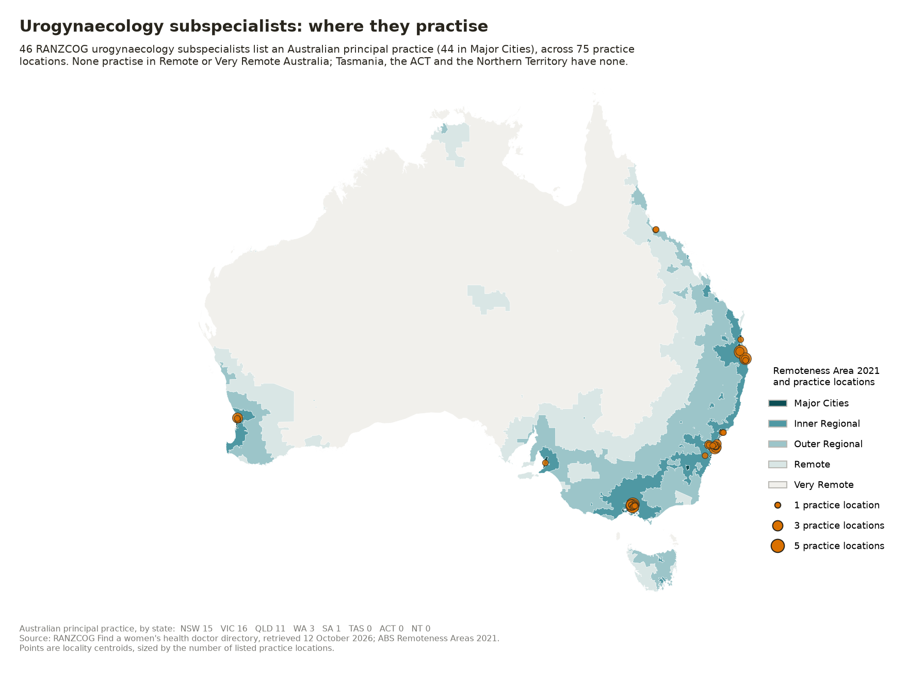
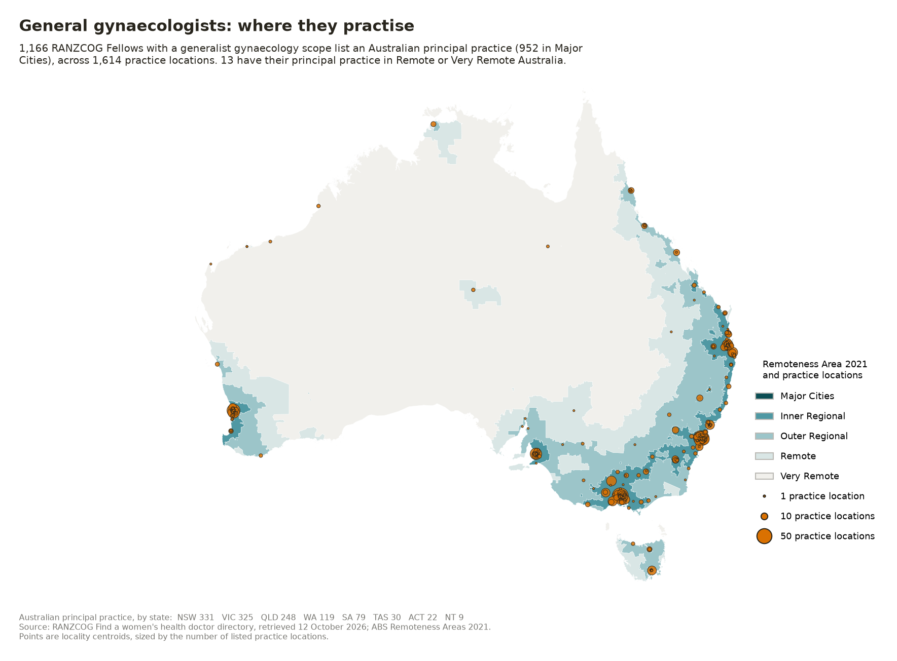

Overview
Australia has a large, well-characterised pelvic-floor care need and a small, highly metropolitan, predominantly private supply. The misalignment worsens monotonically with remoteness.
Specialist supply per 100,000 people, by remoteness
Prolapse + incontinence cases per O&G specialist
The six structural findings
Burden of disease
Prevalence rates applied to the 10.28 million Australian women aged 18 and over, plus the modelled downstream demand generated by a single birth cohort.
Prevalent cases by remoteness and condition
2023 birth cohort — mode of birth
Prevalent need by remoteness area
Downstream demand from the single 2023 cohort
Where the risk comes from
- Roughly half the risk is attributable to pregnancy and birth (muscle, connective-tissue and nerve trauma); the other half to lifestyle and occupational chronic loading. The two are not independent.
- The first vaginal birth carries the greatest risk — a step change at birth one, with incremental risk thereafter.
- A second-stage emergency caesarean behaves more like a complicated vaginal birth than an elective caesarean.
- Crowning involves about 170% transverse stretch and 40% lengthening of perineal tissue.
- 4,556 women (2.7%) had a recorded third- or fourth-degree tear in 2023 — about 1 in 37 vaginal births. AIHW combines the two grades.
- About 1 in 5 Australian women will have prolapse surgery in her lifetime (19% by age 85, Smith 2010 WA cohort). Recurrence runs 15–30%.
- Nordic multicentre prevention bundles cut severe tears from 4–5% to 1–2% across four hospitals.
Workforce and supply
Three workforces carry pelvic-floor care: general practice, obstetrics and gynaecology, and pelvic-health physiotherapy. They have very different geographic and sector profiles.
Headcount distribution by remoteness (% of each workforce)
Metropolitan concentration factor (per-capita Major Cities ÷ Very Remote)
Sector reliance inverts with remoteness
Subspecialty capacity
Workforce supply by remoteness area
Where urogynaecology subspecialists practise

Where general gynaecologists practise

RANZCOG directory counts by state
How many GPs actually provide pelvic-floor care?
No Australian dataset measures this. BEACH closed in 2016 with no successor, MABEL publishes no pelvic-floor cut, and there is no MBS item flag. Three concentric estimates are defensible.
Access and waiting lists
Two very different waits matter, and only one is nationally measured. Elective surgery waiting times capture the delay after a decision to operate. The outpatient wait for a first specialist appointment — usually the longer and more consequential delay — has no national collection at all.
Gynaecology elective surgery waits, 2023–24
Gynaecology elective surgery volume, 2023–24
Gynaecology elective surgery by jurisdiction
Outpatient waiting — what each jurisdiction publishes
Longest reported gynaecology waits by local service
Elective surgery — highest % waiting over 365 days
Elective surgery — longest median wait (days)
Access barriers reported from practice
- Chronic Disease Management plans fund 5 physiotherapy sessions against 10 psychology sessions — a poor fit for a condition whose first-line treatment is supervised pelvic-floor muscle training.
- There is no reliable national directory of pelvic-floor physiotherapists, the workforce women are most often told to see directly.
- Post-mesh reluctance to consult gynaecologists at all persists as a measurable care-seeking barrier.
- Typical private out-of-pocket cost around $7,000.
Gap analysis
Where need and supply diverge, how much of the need converts into delivered treatment, and what sector delivers it.
Demand-to-supply ratio by remoteness
Delivery is majority-private
Reconstructive pelvic-floor surgery, 2023–24
Need against delivered activity — the conversion funnel
Bar lengths are log-scaled so that small values remain visible across five orders of magnitude.
The gap is structurally unmeasurable in current collections
Urogynaecology is not separately reported in NHMD procedure reporting, NESWTDC waiting times, any state outpatient dashboard, MBS geographic breakdowns, or the AIHW 152-item intended-procedure list. Colposuspension, mid-urethral sling, sacrocolpopexy and sacrospinous fixation appear nowhere as standalone national categories. There is no national outpatient waiting-list collection at all.
Sources and methodology
Every figure in this dashboard is baked at build time from the datasets deposited in the ABC – Prolapse project repository. There is no backend, no live query and no patient-level data.
Method — how each number is derived
- Population by remoteness: ABS ERP at 30 June 2023, ASGS Remoteness Area 2021.
- Women 18+: derived, not published. The national women-18+ share of total ERP (10,284,187 / 26,652,777 = 38.59%) is applied uniformly to each remoteness area. Remote and Very Remote populations skew younger and more male, so their adult-female counts — and therefore prevalence and demand-to-supply ratios — are likely overstated by roughly 5–10%. An RA-level age-and-sex table would remove the approximation and is the priority v2 refinement.
- Prevalence: UI 25%, symptomatic POP 6.8%, FI 19.8% of women 18+ — constants inherited from the Bayside Health Pelvic Floor and Continence Services Dashboard, not re-derived from an Australian systematic review for this build. Treat as a prevalence floor.
- Help-seeking: default 30% of prevalent cases seeking care over 10 years, applied only in the Gap analysis conversion funnel.
- Workforce: NHWDS 2023 headcount, filtered to "In labour force in Australia". Workforce location is not service location.
- Sector split: O&G public share of clinical hours in the modal 35–49 h band; GP proportion exclusively public. NHWDS confidentialises small cells to multiples of 3–5, so Remote and Very Remote sector figures are indicative only.
- Procedure volume: NHMD counts separations; MBS counts services. The two are different units and diverge for day surgery and multi-procedure episodes. Twelve MBS items on the curated list return zero NHMD activity under ACHI 12; a few (bulking, artificial urinary sphincter) show MBS at 106–143% of NHMD and are treated as essentially fully private.
- Cohort projection: per-cohort, not annual demand, and built on coarse marginal-independence risk strata that must not be presented as patient-level prediction.
- Suppression: NR, NP and blank cells never mean zero.
Known limitations
- No service-level national inventory exists. Supply is measured by workforce location, not by where a prolapse clinic actually runs.
- Urogynaecology is not separately identifiable in any national or jurisdictional collection. Every urogynaecology-specific figure here is a workforce self-designation, an ACHI/MBS reconstruction, or an inference from a derived public share.
- Outpatient waiting data are not poolable. Four jurisdictions publish nothing; the four that publish use incompatible units.
- Private-sector supply is only partially visible, and least visible in Tasmania, the ACT and the Northern Territory, none of which publish a private-hospital licensing register.
- Mixed data vintages — NHWDS 2023, ABS 2023, AIHW 2023–24, VAHI 2025 Q2, Queensland June 2026. Comparisons within one dataset are sound; across datasets they carry a vintage caveat.
- Victoria has zero public gynaecology sites in Remote or Very Remote classes; the eight most distant are all Outer Regional. Only Grampians Health (Ballarat) and Bendigo Health advertise subspecialty prolapse or incontinence services outside metropolitan Melbourne.
- All 10 RANZCOG-accredited urogynaecology training units listed in 2022–23 were in major-city localities (12 units in 2023–24; locations not re-verified), so the pipeline reproduces the existing distribution rather than correcting it.
Source register
Attribution
Adapted from the AWPFDSC dashboard design specification v1.0 (A/Prof J. Oliver Daly, 28 August 2026), itself derived from the Bayside Health Pelvic Floor & Continence Services Dashboard (v1, 28 May 2026). Analysis consolidated from five ABC – Prolapse project threads: Obstetrics and Gynaecology Workforce Analysis; Public Data on Urogynaecology Waiting Lists; Urogynaecology Volumes and Demand Analysis; Australian Women's Health Services by Remoteness; and Vaginal Prolapse Interview Questions.
Corrections of record carried forward: the Australian body is the Urogynaecological Society of Australasia (UGSA, est. 2010) — no organisation called "AAUG" was confirmed to exist. myhospitals.aihw.gov.au has been retired; content now sits at aihw.gov.au/hospitals. Lifetime prolapse-surgery risk is ~1 in 5 (19% by age 85), not the older "1 in 8–12".